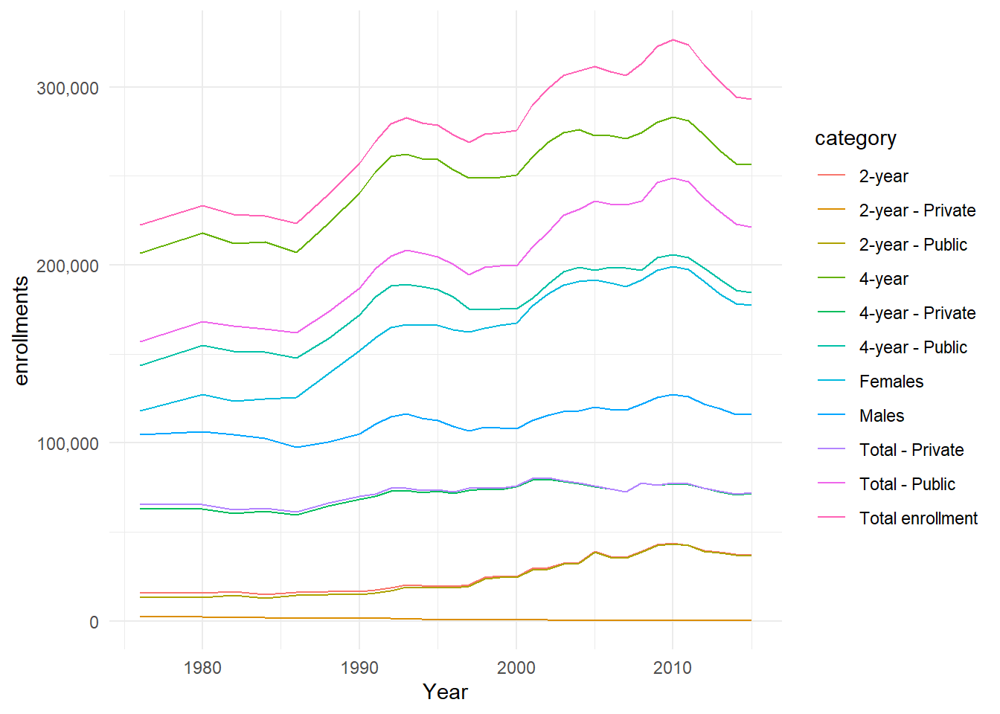
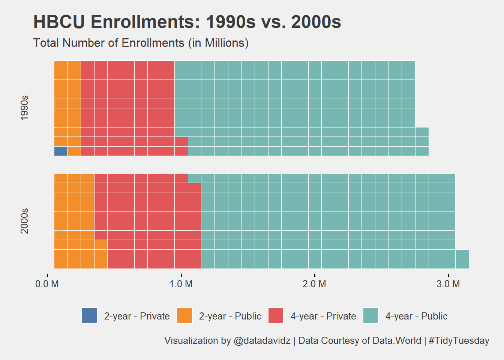

TidyTuesday: HBCU Enrollments Dataset
Posted on February 2, 2021
A quick analysis of the weekly #TidyTuesday dataset organized by the R4DS Online Learning Community. My approach is to apply my data science skills to explore one question I have about the data and generate a visualization that addresses this question. The main purpose for me is to practice and try out new things. I am never completely satisfied with the end result but I do the best I can in a short period of time.
What I learned this week about R and the Tidyverse
- My first use of the waffle package to make a waffle plot using geom_waffle.
- It is tricky to get the scales correct in a waffle bar plot. Need to multiply back by a factor related to number of waffle rows.
- Used the truncated division operator (%/%) in function to assign years to decades.
Brief explanation of the dataset
The dataset contained number of enrollments at historically-black universities and colleges (HBCUs) from 1976-2015. The main content of the dataset was the number of enrollments broken down by gender, public or private school and 2 or 4 year program. My question was: “How did the enrollments change by HBCU type comparing 1990s vs. 2000s?”. Complete data was only available for these two decades.
Wrangle
Initial conclusions from exploring the dataset:
- Years span from 1976-2015 but only 1990s and 2000s have complete yearly data.
- Four categories of HBCU: 2- and 4- year and Public or Private.
hbcu_enrollment <- hbcu_all %>%
pivot_longer(`Total enrollment`:`2-year - Private`, names_to = "category", values_to = "enrollments")
hbcu_by_decade <- hbcu_enrollment %>%
filter(category %in% c("2-year - Private", "2-year - Public", "4-year - Private", "4-year - Public")) %>%
filter(Year > 1989 & Year < 2010) %>%
mutate(decade = paste0(10 * (Year %/% 10), "s")) %>%
group_by(decade, category) %>%
summarize(enrollments = sum(enrollments), .groups = "keep") %>%
ungroup()
Visualize
Initial visualization to look at enrollments across all data categories.
hbcu_enrollment %>%
mutate(name = fct_reorder(category, enrollments, last, .desc = TRUE)) %>%
ggplot(aes(x = Year, y = enrollments, color = category)) +
geom_line() +
scale_y_continuous(labels = scales::comma_format())

Would like to create a waffle plot for each decade (1980s - 2010s) of Public, Private, 2-year, 4-year HBCUs.
hbcu_by_decade %>%
ggplot(aes(fill = category, values = enrollments %/% 10000)) +
geom_waffle(color = "white", size = 0.25, n_rows = 10) +
facet_wrap(~decade, ncol = 1, strip.position = "left") +
scale_x_continuous(labels = scales::unit_format(unit = "M", scale = 0.1)) +
scale_y_discrete() +
ggthemes::scale_fill_tableau(name=NULL) +
labs(title = "HBCU Enrollments: 1990s vs. 2000s",
subtitle = "Total Number of Enrollments (in Millions)",
caption = "Visualization by @datadavidz | Data Courtesy of Data.World | #TidyTuesday") +
ggthemes::theme_fivethirtyeight() +
theme(panel.grid.major.x = element_blank(), axis.ticks.x = element_line())

Summary
The number of HBCU enrollments increased from the 1990s to the 2000s largely driven by increase in the number of 2-year, public HBCU enrollments. A function was required to adjust the labels so that the number of enrollments was listed accurately. The scales package was also used to format the labels. I used the “fivethirtyeight” theme but took the fill color from “tableau” both in the ggthemes package.
LS0tDQpvdXRwdXQ6IA0KICBodG1sX2RvY3VtZW50Og0KICAgIGNvZGVfZG93bmxvYWQ6IHRydWUNCiAgICBpbmNsdWRlczoNCiAgICAgIGFmdGVyX2JvZHk6IGZvb3Rlci5odG1sDQotLS0NCjxicj4NCmBgYHtyIHNldHVwLCBpbmNsdWRlPUZBTFNFfQ0Ka25pdHI6Om9wdHNfY2h1bmskc2V0KGVjaG8gPSBUUlVFKQ0KYGBgDQoNCiMjICoqVGlkeVR1ZXNkYXk6IEhCQ1UgRW5yb2xsbWVudHMgRGF0YXNldCoqDQoqUG9zdGVkIG9uIEZlYnJ1YXJ5IDIsIDIwMjEqDQoNCkEgcXVpY2sgYW5hbHlzaXMgb2YgdGhlIHdlZWtseSBbI1RpZHlUdWVzZGF5XShodHRwOi8vZ2l0aHViLmNvbS9yZm9yZGF0YXNjaWVuY2UvdGlkeXR1ZXNkYXkpIGRhdGFzZXQgb3JnYW5pemVkIGJ5IHRoZSBSNERTIE9ubGluZSBMZWFybmluZyBDb21tdW5pdHkuICBNeSBhcHByb2FjaCBpcyB0byBhcHBseSBteSBkYXRhIHNjaWVuY2Ugc2tpbGxzIHRvIGV4cGxvcmUgb25lIHF1ZXN0aW9uIEkgaGF2ZSBhYm91dCB0aGUgZGF0YSBhbmQgZ2VuZXJhdGUgYSB2aXN1YWxpemF0aW9uIHRoYXQgYWRkcmVzc2VzIHRoaXMgcXVlc3Rpb24uICBUaGUgbWFpbiBwdXJwb3NlIGZvciBtZSBpcyB0byBwcmFjdGljZSBhbmQgdHJ5IG91dCBuZXcgdGhpbmdzLiAgSSBhbSBuZXZlciBjb21wbGV0ZWx5IHNhdGlzZmllZCB3aXRoIHRoZSBlbmQgcmVzdWx0IGJ1dCBJIGRvIHRoZSBiZXN0IEkgY2FuIGluIGEgc2hvcnQgcGVyaW9kIG9mIHRpbWUuDQoNCmBgYHtyLCBpbmNsdWRlPUZBTFNFfQ0KDQpsaWJyYXJ5KHRpZHl2ZXJzZSkNCmxpYnJhcnkodGlkeXR1ZXNkYXlSKQ0KbGlicmFyeSh3YWZmbGUpDQoNCnRoZW1lX3NldCh0aGVtZV9taW5pbWFsKCkpDQpgYGANCg0KKipXaGF0IEkgbGVhcm5lZCB0aGlzIHdlZWsgYWJvdXQgUiBhbmQgdGhlIFRpZHl2ZXJzZSoqDQoNCiogTXkgZmlyc3QgdXNlIG9mIHRoZSB3YWZmbGUgcGFja2FnZSB0byBtYWtlIGEgd2FmZmxlIHBsb3QgdXNpbmcgZ2VvbV93YWZmbGUuDQoqIEl0IGlzIHRyaWNreSB0byBnZXQgdGhlIHNjYWxlcyBjb3JyZWN0IGluIGEgd2FmZmxlIGJhciBwbG90LiAgTmVlZCB0byBtdWx0aXBseSBiYWNrIGJ5IGEgZmFjdG9yIHJlbGF0ZWQgdG8gbnVtYmVyIG9mIHdhZmZsZSByb3dzLg0KKiBVc2VkIHRoZSB0cnVuY2F0ZWQgZGl2aXNpb24gb3BlcmF0b3IgKCUvJSkgaW4gZnVuY3Rpb24gdG8gYXNzaWduIHllYXJzIHRvIGRlY2FkZXMuDQoNCioqQnJpZWYgZXhwbGFuYXRpb24gb2YgdGhlIGRhdGFzZXQqKg0KDQpUaGUgZGF0YXNldCBjb250YWluZWQgbnVtYmVyIG9mIGVucm9sbG1lbnRzIGF0IGhpc3RvcmljYWxseS1ibGFjayB1bml2ZXJzaXRpZXMgYW5kIGNvbGxlZ2VzIChIQkNVcykgZnJvbSAxOTc2LTIwMTUuICBUaGUgbWFpbiBjb250ZW50IG9mIHRoZSBkYXRhc2V0IHdhcyB0aGUgbnVtYmVyIG9mIGVucm9sbG1lbnRzIGJyb2tlbiBkb3duIGJ5IGdlbmRlciwgcHVibGljIG9yIHByaXZhdGUgc2Nob29sIGFuZCAyIG9yIDQgeWVhciBwcm9ncmFtLiAgTXkgcXVlc3Rpb24gd2FzOiAiSG93IGRpZCB0aGUgZW5yb2xsbWVudHMgY2hhbmdlIGJ5IEhCQ1UgdHlwZSBjb21wYXJpbmcgMTk5MHMgdnMuIDIwMDBzPyIuICBDb21wbGV0ZSBkYXRhIHdhcyBvbmx5IGF2YWlsYWJsZSBmb3IgdGhlc2UgdHdvIGRlY2FkZXMuDQoNCmBgYHtyIExvYWQsIGluY2x1ZGUgPSBGQUxTRX0NCiNTYXZlIG5lZWRlZCBkYXRhIGludG8gcmRzIGZvciBibG9nIHBvc3QNCmhiY3VfYWxsIDwtIHJlYWRSRFMoZmlsZSA9ICIuL2RhdGEvdHRfMjEwMjAyLnJkcyIpDQpgYGANCg0KIyMjIFdyYW5nbGUNCg0KSW5pdGlhbCBjb25jbHVzaW9ucyBmcm9tIGV4cGxvcmluZyB0aGUgZGF0YXNldDoNCg0KKiBZZWFycyBzcGFuIGZyb20gMTk3Ni0yMDE1IGJ1dCBvbmx5IDE5OTBzIGFuZCAyMDAwcyBoYXZlIGNvbXBsZXRlIHllYXJseSBkYXRhLg0KKiBGb3VyIGNhdGVnb3JpZXMgb2YgSEJDVTogMi0gYW5kIDQtIHllYXIgYW5kIFB1YmxpYyBvciBQcml2YXRlLg0KDQpgYGB7ciBXcmFuZ2xlfQ0KaGJjdV9lbnJvbGxtZW50IDwtIGhiY3VfYWxsICU+JQ0KICBwaXZvdF9sb25nZXIoYFRvdGFsIGVucm9sbG1lbnRgOmAyLXllYXIgLSBQcml2YXRlYCwgbmFtZXNfdG8gPSAiY2F0ZWdvcnkiLCB2YWx1ZXNfdG8gPSAiZW5yb2xsbWVudHMiKQ0KDQpoYmN1X2J5X2RlY2FkZSA8LSBoYmN1X2Vucm9sbG1lbnQgICU+JQ0KICBmaWx0ZXIoY2F0ZWdvcnkgJWluJSBjKCIyLXllYXIgLSBQcml2YXRlIiwgIjIteWVhciAtIFB1YmxpYyIsICI0LXllYXIgLSBQcml2YXRlIiwgIjQteWVhciAtIFB1YmxpYyIpKSAlPiUNCiAgZmlsdGVyKFllYXIgPiAxOTg5ICYgWWVhciA8IDIwMTApICU+JQ0KICBtdXRhdGUoZGVjYWRlID0gcGFzdGUwKDEwICogKFllYXIgJS8lIDEwKSwgInMiKSkgJT4lDQogIGdyb3VwX2J5KGRlY2FkZSwgY2F0ZWdvcnkpICU+JQ0KICBzdW1tYXJpemUoZW5yb2xsbWVudHMgPSBzdW0oZW5yb2xsbWVudHMpLCAuZ3JvdXBzID0gImtlZXAiKSAlPiUNCiAgdW5ncm91cCgpDQpgYGANCiMjIyBWaXN1YWxpemUNCg0KSW5pdGlhbCB2aXN1YWxpemF0aW9uIHRvIGxvb2sgYXQgZW5yb2xsbWVudHMgYWNyb3NzIGFsbCBkYXRhIGNhdGVnb3JpZXMuDQpgYGB7ciBWaXN1YWxpemV9DQpoYmN1X2Vucm9sbG1lbnQgJT4lDQogIG11dGF0ZShuYW1lID0gZmN0X3Jlb3JkZXIoY2F0ZWdvcnksIGVucm9sbG1lbnRzLCBsYXN0LCAuZGVzYyA9IFRSVUUpKSAlPiUNCiAgZ2dwbG90KGFlcyh4ID0gWWVhciwgeSA9IGVucm9sbG1lbnRzLCBjb2xvciA9IGNhdGVnb3J5KSkgKw0KICBnZW9tX2xpbmUoKSArDQogIHNjYWxlX3lfY29udGludW91cyhsYWJlbHMgPSBzY2FsZXM6OmNvbW1hX2Zvcm1hdCgpKQ0KYGBgDQoNCldvdWxkIGxpa2UgdG8gY3JlYXRlIGEgd2FmZmxlIHBsb3QgZm9yIGVhY2ggZGVjYWRlICgxOTgwcyAtIDIwMTBzKSBvZiBQdWJsaWMsIFByaXZhdGUsIDIteWVhciwgNC15ZWFyIEhCQ1VzLg0KYGBge3J9DQpoYmN1X2J5X2RlY2FkZSAlPiUNCiAgZ2dwbG90KGFlcyhmaWxsID0gY2F0ZWdvcnksIHZhbHVlcyA9IGVucm9sbG1lbnRzICUvJSAxMDAwMCkpICsNCiAgZ2VvbV93YWZmbGUoY29sb3IgPSAid2hpdGUiLCBzaXplID0gMC4yNSwgbl9yb3dzID0gMTApICsNCiAgZmFjZXRfd3JhcCh+ZGVjYWRlLCBuY29sID0gMSwgc3RyaXAucG9zaXRpb24gPSAibGVmdCIpICsgDQogIHNjYWxlX3hfY29udGludW91cyhsYWJlbHMgPSBzY2FsZXM6OnVuaXRfZm9ybWF0KHVuaXQgPSAiTSIsIHNjYWxlID0gMC4xKSkgKw0KICBzY2FsZV95X2Rpc2NyZXRlKCkgKw0KICBnZ3RoZW1lczo6c2NhbGVfZmlsbF90YWJsZWF1KG5hbWU9TlVMTCkgKw0KICBsYWJzKHRpdGxlID0gIkhCQ1UgRW5yb2xsbWVudHM6IDE5OTBzIHZzLiAyMDAwcyIsDQogICAgICAgc3VidGl0bGUgPSAiVG90YWwgTnVtYmVyIG9mIEVucm9sbG1lbnRzIChpbiBNaWxsaW9ucykiLA0KICAgICAgIGNhcHRpb24gPSAiVmlzdWFsaXphdGlvbiBieSBAZGF0YWRhdmlkeiB8IERhdGEgQ291cnRlc3kgb2YgRGF0YS5Xb3JsZCB8ICNUaWR5VHVlc2RheSIpICsNCiAgZ2d0aGVtZXM6OnRoZW1lX2ZpdmV0aGlydHllaWdodCgpICsNCiAgdGhlbWUocGFuZWwuZ3JpZC5tYWpvci54ID0gZWxlbWVudF9ibGFuaygpLCBheGlzLnRpY2tzLnggPSBlbGVtZW50X2xpbmUoKSkNCg0KYGBgDQoNCiMjIyBTdW1tYXJ5DQoNClRoZSBudW1iZXIgb2YgSEJDVSBlbnJvbGxtZW50cyBpbmNyZWFzZWQgZnJvbSB0aGUgMTk5MHMgdG8gdGhlIDIwMDBzIGxhcmdlbHkgZHJpdmVuIGJ5IGluY3JlYXNlIGluIHRoZSBudW1iZXIgb2YgMi15ZWFyLCBwdWJsaWMgSEJDVSBlbnJvbGxtZW50cy4gIEEgZnVuY3Rpb24gd2FzIHJlcXVpcmVkIHRvIGFkanVzdCB0aGUgbGFiZWxzIHNvIHRoYXQgdGhlIG51bWJlciBvZiBlbnJvbGxtZW50cyB3YXMgbGlzdGVkIGFjY3VyYXRlbHkuICBUaGUgc2NhbGVzIHBhY2thZ2Ugd2FzIGFsc28gdXNlZCB0byBmb3JtYXQgdGhlIGxhYmVscy4gIEkgdXNlZCB0aGUgImZpdmV0aGlydHllaWdodCIgdGhlbWUgYnV0IHRvb2sgdGhlIGZpbGwgY29sb3IgZnJvbSAidGFibGVhdSIgYm90aCBpbiB0aGUgZ2d0aGVtZXMgcGFja2FnZS4NCg==